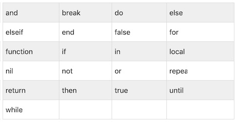

Lua 基本语法
Lua 学习起来非常简单，我们可以创建第一个 Lua 程序！
一、第一个 Lua 程序
1、交互式编程
Lua 提供了交互式编程模式。我们可以在命令行中输入程序并立即查看效果。
Lua 交互式编程模式可以通过命令 lua -i 或 lua 来启用：
$ lua -i
$ Lua 5.3.5 Copyright (C) 1994-2018 Lua.org, PUC-Rio
>
在命令行中，输入以下 print("Hello World！") 命令，接着按下回车键，输出结果如下：
> print("Hello World！")
Hello World！
>
2、脚本式编程
我们可以将 Lua 程序代码保持到一个以 lua 结尾的文件，并执行，该模式称为脚本式编程，如我们将如下代码存储在名为 hello.lua 的脚本文件中：
print("Hello World！")
print("程序喵")
使用 lua 名执行以上脚本，输出结果为：
$ lua test.lua
Hello World！
程序喵
我们也可以将代码修改为如下形式来执行脚本（在开头添加：#!/usr/local/bin/lua）：
#!/usr/local/bin/lua
print("Hello World！")
print("程序喵")
以上代码中，我们指定了 Lua 的解释器 /usr/local/bin 目录。加上 # 号标记解释器会忽略它。
二、注释
1、单行注释
两个减号是单行注释
--
2、多行注释
--[[
多行注释
多行注释
--]]
三、标示符
Lua 表示符用于定义一个变量，函数获取其他用户定义的项。标示符以一个字母 A-Z 或 a-z 或下划线 _ 开头后加上0或多个字母，下划线，数字（0-9）。
最好不要使用下划线加大写字母的标示符，因为 Lua 的保留字也是这样的。
Lua 不允许使用特殊字符如 @, $, 和 % 来定义标示符。 Lua 区分大小
以下列出了一些正确的标示符：
mohd zara abc move_name a_123
myname50 _temp j a23b9 retVal
四、关键词
以下列出了 Lua 的保留关键字。保留关键字不能作为常量或变量或其他用户自定义标示符。

一般约定，以下划线开头连接一串大写字母的名字（比如 _VERSION）被保留用于 Lua 内部全局变量。
五、全局变量
在默认情况下，变量总是认为是全局的。
全局变量不需要声明，给一个变量赋值后即创建了这个全局变量，访问一个没有初始化的全局变量也不会出错，只不过得到的结果是：nil。
print(b) --> nil
b=10
print(b) --> 10
如果你想删除一个全局变量，只需要将变量赋值为nil。
b = nil
print(b) --> nil
这样变量 b 就好像从没被使用过一样。换句话说, 当且仅当一个变量不等于 nil 时，这个变量即存在。